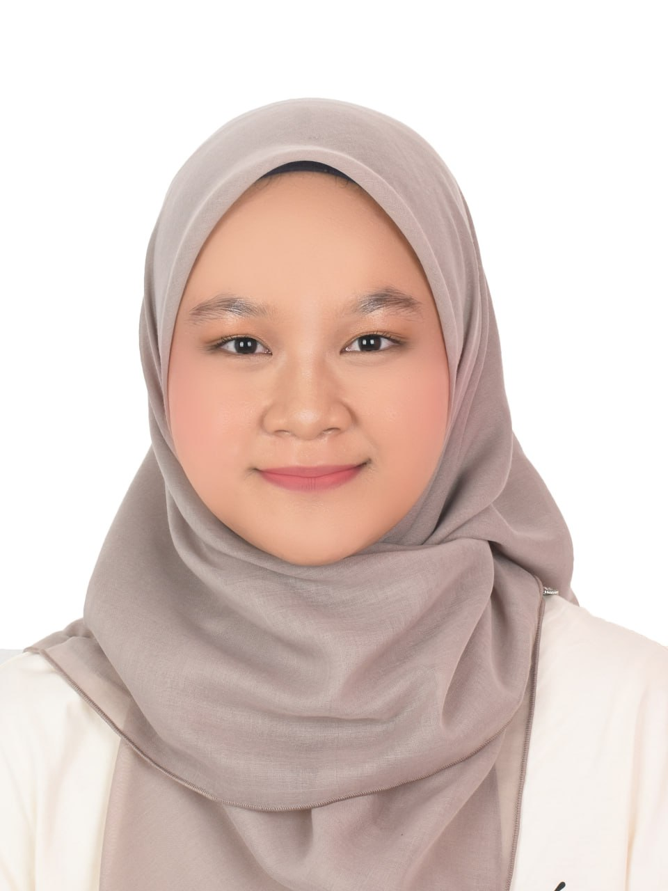

📄 Biodata

| Name | Fateen Nabila Binti Mohd Bakar |
|---|---|
| Date of Birth | 18/02/2004 |
| Religion | Islam |
| Race | Melayu |
| Address | No.10, Lorong 1, Jalan Belimbing Taman Kluang, Kluang, Johor |
| Contact | |
| Course | Bachelor of Computer Science and Information Technology, UTHM |
| Programming Skills |
|
| 2025 Wishlist |
|
🎨 Hobbies
- Embroidery or cross-stitch 🪡
- Reading museum catalogues 🖼
- Candle or soap making 🧼
- Herb gardening 🌿
🎓 Campus Life
Campus life hits different when there's stuff like:
- Karaoke nights where everyone sings their heart out (even the off-key ones – we love them!) 🎤
- Hari Raya celebrations – good vibes, beautiful outfits & all the delicious food 😋
- That one fun run with colour powder flying everywhere – chaos, but the fun kind! 🌈
- Late-night makan sessions with friends – simple moments that hit the heart 💝
One of my all-time fave vibes? Chilling at Batu Pahat Mall – makan-makan, karaoke, and just laughing non-stop with my friends. Pure good times. 🎤🍜✨